Muka peta (map face)
- Muka peta adalah gambar peta yang berisi wilayah dan objek yang dipetakan.
- Muka peta dibatasi oleh garis tepi peta (neatline).
Komponen peta adalah bagian-bagian yang menyusun sebuah peta, baik gambar petanya maupun keterangan pendukungnya.
CPMK1. Komponen peta: komponen dan kelengkapan peta. Latihan terarah dan kuis: mengidentifikasi komponen dan kekurangan peta dengan lembar audit komponen peta.
Setelah pertemuan ini, mahasiswa mampu:
Menampilkan berbagai unsur geografis.
Contoh: peta topografi / RBIMenonjolkan tema tertentu.
Contoh: peta kepadatan pendudukPeta RBI memuat banyak jenis objek. Simbolnya akan dibaca satu per satu pada Bagian 5.

Bandingkan: peta RBI membantu pembaca mengenali berbagai objek, sedangkan peta kepadatan penduduk membantu pembaca melihat wilayah yang lebih padat atau lebih jarang penduduknya.
| Dasar pembagian | Yang dibandingkan | Contoh |
|---|---|---|
| Isi | Berbagai unsur atau satu tema | Peta umum dan peta tematik |
| Skala | Tingkat kerincian dan cakupan wilayah | 1 : 25.000 lebih besar skalanya daripada 1 : 250.000 |
| Penyajian | Simbol atau rekaman foto/citra sebagai tampilan utama | Peta garis dan peta foto/citra |

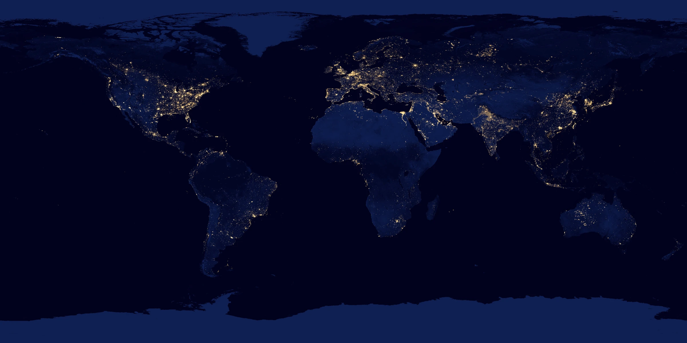
Pertemuan ini membahas apakah komponen, simbol, dan keterangan peta sudah membantu pembaca memahami informasi tersebut.
Minggu 4–10 bersama Praja dilaksanakan secara daring.
Komponen sebuah peta dapat dikelompokkan menjadi dua bagian besar, yaitu muka peta dan informasi tepi.
Setiap kartu menjelaskan fungsi komponen, contoh penyajian yang baik, dan contoh penyajian yang kurang baik.
Judul memberi tahu pembaca tema, wilayah, dan waktu yang dipetakan.
Baik: judul menyebut tema, wilayah, dan tahun, misalnya “Kepadatan Penduduk Kabupaten Sleman, 2025” (ilustrasi).Kurang: judul hanya berbunyi “Peta” atau “Peta Tematik” sehingga isi peta tidak diketahui.Muka peta menampilkan wilayah dan objek yang dipetakan dengan simbol.
Baik: muka peta mendapat ruang terbesar dan wilayah utama langsung terlihat.Kurang: muka peta terlalu kecil, terpotong, atau tertutup oleh komponen lain.Garis tepi peta membatasi muka peta dan menjadi tempat penulisan angka koordinat.
Baik: garis tepi tipis, rapi, dan tidak memotong informasi penting.Kurang: garis tepi terlalu tebal sehingga lebih menarik perhatian daripada isi peta.Bingkai membatasi seluruh isi halaman, yaitu muka peta dan informasi tepi.
Baik: semua komponen berada di dalam bingkai dengan jarak tepi yang cukup.Kurang: ada komponen yang keluar dari bingkai atau menempel pada garis bingkai.Legenda menjelaskan arti setiap simbol, warna, dan pola pada muka peta.
Baik: simbol pada legenda sama dengan simbol pada peta dan disertai nama variabel serta satuannya.Kurang: legenda memuat simbol yang tidak ada di peta atau memakai nama kolom data seperti “POP07_SQMI”.Skala menyatakan perbandingan jarak pada peta dengan jarak sebenarnya di lapangan.
Baik: peta yang mungkin diperbesar atau diperkecil memakai skala grafis karena skala grafis tetap benar setelah ukuran peta berubah.Kurang: peta hanya memakai skala angka, lalu dicetak pada ukuran lain sehingga skala tersebut tidak lagi benar.Arah utara menunjukkan orientasi peta terhadap arah mata angin.
Baik: arah utara berukuran sedang dan sederhana, atau orientasi sudah jelas dari garis lintang dan bujur.Kurang: arah utara terlalu besar dan dekoratif sehingga lebih menonjol daripada tema peta.Gratikul (graticule) dan grid (grid) membantu pembaca menentukan posisi suatu titik secara terukur.
Baik: angka koordinat tertulis di garis tepi peta dan satuannya jelas, misalnya derajat atau meter.Kurang: garis grid terlalu tebal sehingga menutupi isi peta, atau angkanya tidak disertai satuan.Keterangan ini menjelaskan cara permukaan bumi dipindahkan ke bidang datar dan acuan koordinat yang dipakai.
Baik: keterangan ditulis lengkap, misalnya “Proyeksi UTM zona 49S, datum WGS 84” (ilustrasi).Kurang: keterangan proyeksi dan datum tidak dicantumkan sehingga koordinat sulit dicocokkan dengan data lain.Komponen ini menunjukkan letak wilayah dalam cakupan yang lebih luas atau memperjelas bagian tertentu.
Baik: inset dan peta lokasi diberi batas yang jelas, dan wilayah utama ditandai dengan kotak penunjuk.Kurang: inset tidak diberi kotak penunjuk sehingga pembaca tidak tahu bagian mana yang ditampilkan.Keterangan ini menunjukkan asal data, pihak yang bertanggung jawab, dan waktu berlakunya informasi.
Baik: nama instansi atau dataset, tahun data, dan nama pembuat peta dicantumkan.Kurang: sumber hanya ditulis “Internet” atau “Google” tanpa nama dataset dan tahun.Label menuliskan nama unsur pada peta, sedangkan toponimi adalah nama rupabumi seperti nama sungai, gunung, dan desa.
Baik: label mudah dibaca, tidak saling menutupi, dan ejaan namanya baku.Kurang: label bertumpuk, terlalu kecil, atau ejaan nama tempatnya salah.Lengkap tidak berarti harus memuat semua komponen. Sebuah peta dianggap lengkap jika informasi yang dibutuhkan untuk membaca dan menggunakan peta tersebut sudah tersedia.
TERLALU UMUMPeta Gunung ApiWilayah dan waktu data belum dijelaskan.
LEBIH JELASPersebaran Gunung Api di Indonesia, 2025Tema, wilayah, dan tahun langsung diketahui (ilustrasi).
CONTOH LAINKepadatan Penduduk Kabupaten Sleman, 2025Judul menyebut variabel, wilayah, dan tahun (ilustrasi).
CONTOH LAINJaringan Jalan di Kota YogyakartaTahun dapat dicantumkan pada judul atau pada keterangan sumber.
 Fasilitas kesehatan
Pendidikan tinggi
Masjid
Rumah sakit
Fasilitas kesehatan
Pendidikan tinggi
Masjid
Rumah sakit
Sumber seluruh simbol: Badan Informasi Geospasial — Basemap Rupabumi Indonesia.
Titik, garis, dan area adalah bentuk simbol, bukan jenis peta.
Kurang jelasPeta Kepadatan PendudukWilayah dan tahun belum diketahui.
Lebih jelasKepadatan Penduduk di Amerika Serikat Daratan, 2007Tema, wilayah, dan tahun disebutkan.
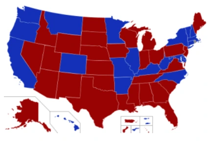
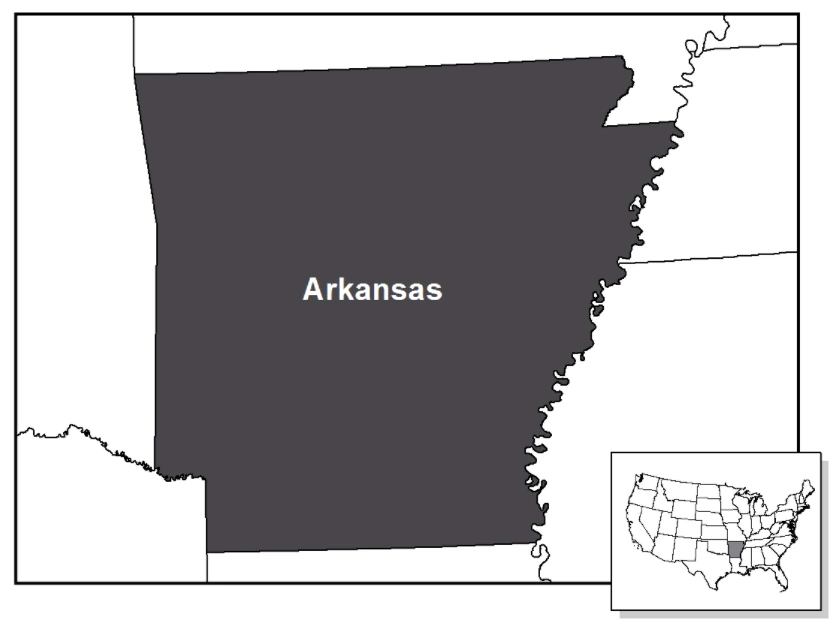
Skala angka1 : 25.000
Skala verbal1 cm = 250 m
Skala grafis
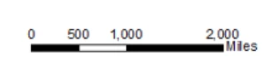
Tema dan data yang sama dapat menjadi lebih mudah atau lebih sulit dibaca karena cara penyajiannya.

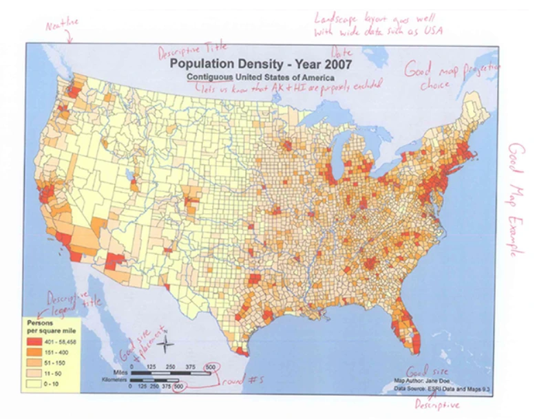
Diringkas dari Esri — Primary Design Principles for Cartography.
Fokus analisis: unsur apa yang dipilih untuk cakupan seluruh dunia?
Fokus analisis: apa arti kelas warna dan satuan pada legenda?

Fokus analisis: warna menunjukkan selisih terhadap periode acuan, bukan suhu udara sebenarnya.
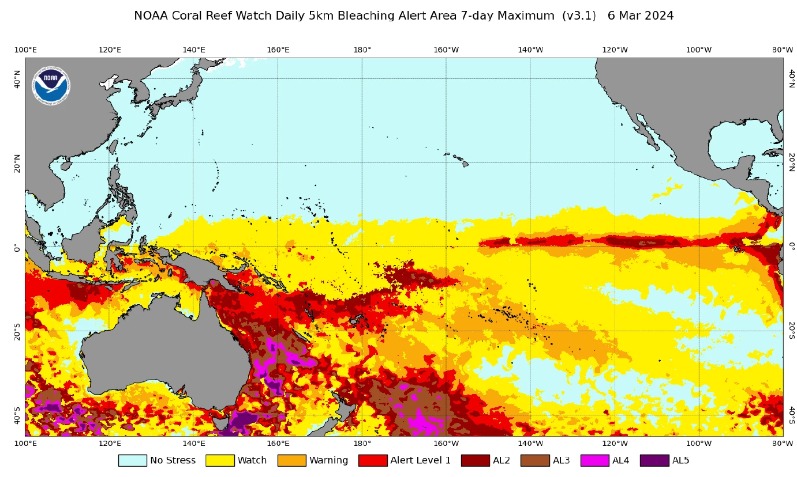
Fokus analisis: kategori peringatan dan tanggal peta.
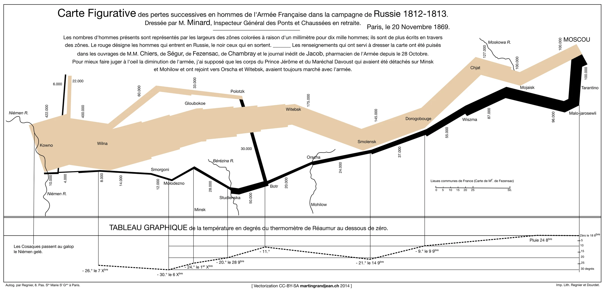
Fokus analisis: arah, warna, dan perubahan lebar garis.
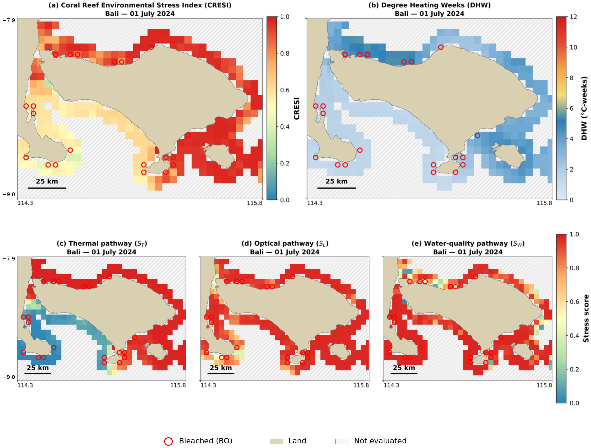
Fokus analisis: legenda dan satuan pada setiap panel.
Pilih satu peta untuk dibahas bersama di kelas.
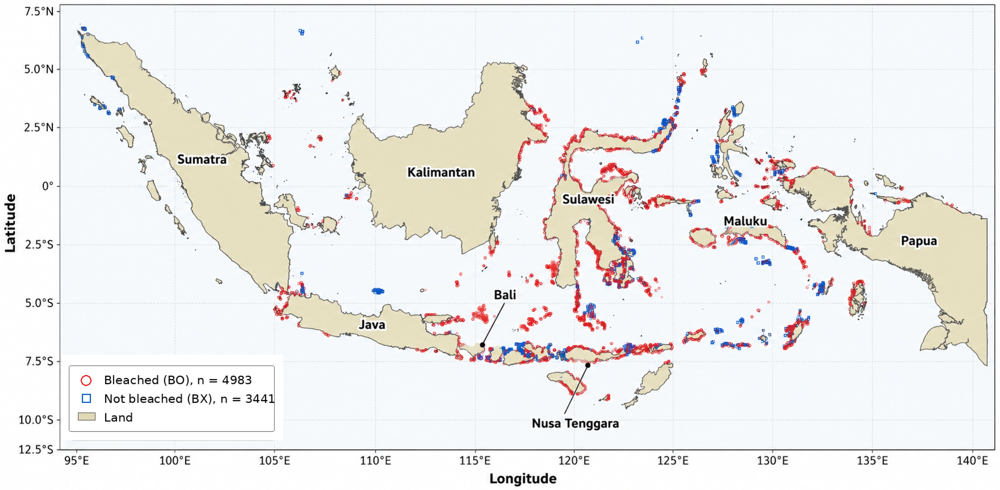
Aspek analisis: apakah banyaknya titik menunjukkan luas terumbu karang atau lokasi pengamatan?
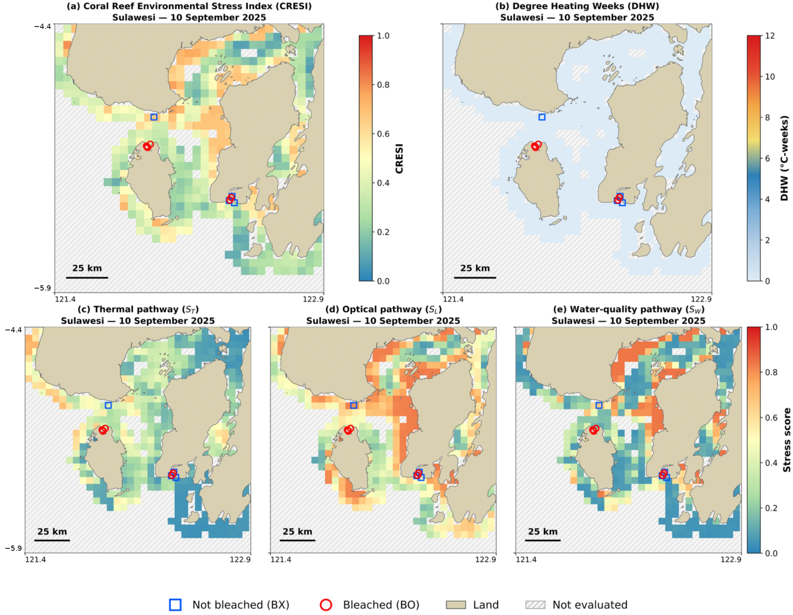
Aspek analisis: apa yang harus dibaca sebelum membandingkan warna pada setiap panel?
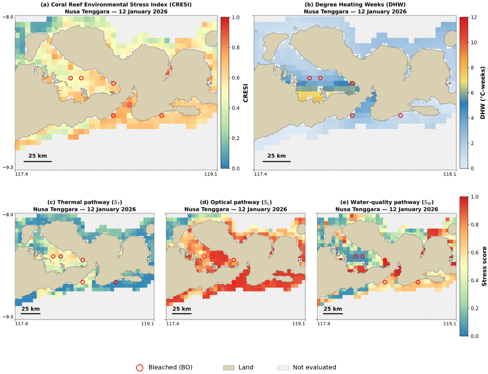
Aspek analisis: informasi apa yang perlu diperiksa sebelum membandingkannya dengan wilayah lain?
Pertemuan 5 membahas proyeksi permukaan bumi pada bidang datar serta perubahan bentuk, luas, jarak, dan arah yang dapat ditimbulkannya.
Audit komponen peta adalah pemeriksaan sistematis untuk mengetahui komponen yang sudah ada, komponen yang kurang, dan perbaikan yang diperlukan. Pada latihan ini kamu mencari sendiri satu peta lalu mengaudit setiap komponennya.
| No. | Komponen | Pertanyaan yang harus dijawab | Ada / Tidak ada / Tidak diperlukan | Baik / Kurang dan bukti |
|---|---|---|---|---|
| 1 | Judul | Salin judul peta. Apakah judul memuat tema, wilayah, dan tahun? Sebutkan unsur yang tidak ada. | … | … |
| 2 | Muka peta | Wilayah apa yang ditampilkan? Apakah tema utama langsung terlihat dan mendapat ruang terbesar? | … | … |
| 3 | Garis tepi peta | Adakah garis yang membatasi muka peta? Apakah nilai koordinat ditulis pada garis tersebut? | … | … |
| 4 | Bingkai | Adakah garis terluar yang membingkai seluruh lembar, termasuk informasi tepi? | … | … |
| 5 | Legenda | Salin satu simbol titik, satu simbol garis, dan satu simbol area beserta artinya. Apakah satuan ditulis jika datanya berupa angka? | … | … |
| 6 | Skala | Jenis skala apa yang ada (angka, verbal, atau grafis)? Salin skala angka, atau tulis jarak pada ruas pertama skala grafis. | … | … |
| 7 | Arah utara | Bagaimana bentuk penunjuk arah utara (panah, mata angin, atau diagram tiga arah utara) dan di mana letaknya? | … | … |
| 8 | Sistem koordinat dan grid | Salin satu nilai koordinat dari tepi peta. Apakah nilainya dalam derajat (gratikul) atau meter (grid)? | … | … |
| 9 | Proyeksi dan datum | Salin tulisan proyeksi dan datum dari peta. Jika tidak ada, tulis "tidak ada". | … | … |
| 10 | Inset, peta lokasi, atau peta indeks | Adakah peta kecil di luar muka peta? Tentukan fungsinya: inset, peta lokasi, atau peta indeks. | … | … |
| 11 | Sumber data, pembuat, dan tahun | Salin nama pembuat, sumber data, dan tahun yang tertulis pada peta. | … | … |
| 12 | Label dan toponimi | Salin tiga nama tempat dari muka peta. Adakah label yang bertumpuk, terpotong, atau tertutup simbol? | … | … |

| No. | Komponen | Status | Baik / Kurang dan bukti |
|---|---|---|---|
| 1 | Judul | Ada | Kurang. Judul "Peta Patahan Aktif Kabupaten Bandung Barat, Jawa Barat" sudah memuat tema dan wilayah, tetapi tidak memuat tahun. |
| 2 | Muka peta | Ada | Baik. Muka peta di kiri atas menampilkan Kabupaten Bandung Barat dengan warna satuan batuan dan garis patahan merah, sedangkan wilayah di luar kabupaten hanya berupa bayangan relief abu-abu. |
| 3 | Garis tepi peta | Ada | Baik. Muka peta dibatasi garis tepi yang diberi nilai koordinat, misalnya 107°20'0"E dan 6°50'0"S. |
| 4 | Bingkai | Ada | Baik. Garis hitam terluar membingkai muka peta dan seluruh informasi tepi. |
| 5 | Legenda | Ada | Baik, tetapi hurufnya kecil. Simbol titik: kotak hitam berarti kota/kabupaten. Simbol garis: garis merah dengan segitiga berarti patahan naik. Simbol area: warna jingga muda berarti batuan gunungapi kuarter. Uraian satuan batuan panjang dan hurufnya kecil. |
| 6 | Skala | Ada | Baik untuk tampilan digital. Hanya ada skala grafis dalam kilometer dengan ruas pertama 0–6 km; skala angka tidak ada. |
| 7 | Arah utara | Ada | Baik. Mata angin U–S–B–T terletak di bawah daftar penyusun, dan diagram tiga arah utara (US, UG, UM) beserta deklinasinya terletak di kanan bawah. |
| 8 | Sistem koordinat dan grid | Ada | Baik. Koordinat ditulis dalam derajat, menit, dan detik (gratikul), misalnya 107°30'0"E; grid dalam meter tidak ditampilkan. |
| 9 | Proyeksi dan datum | Ada | Kurang. Tulisan "Proyeksi Transverse Mercator WGS 84" ada di bawah skala, tetapi datum tidak ditulis sebagai keterangan terpisah. |
| 10 | Inset, peta lokasi, atau peta indeks | Ada | Baik. Kotak "Peta Indeks" menunjukkan letak Bandung Barat di antara Purwakarta, Subang, Cianjur, Kota Cimahi, dan Bandung, sehingga fungsinya sama dengan peta lokasi. Ada juga tiga peta kecil tambahan: peta sebaran patahan, peta anomali Bouguer residual, dan penampang gayaberat. |
| 11 | Sumber data, pembuat, dan tahun | Ada | Kurang. Pembuat (Badan Geologi, Pusat Survei Geologi, dan Universitas Padjadjaran), nama penyusun, kartografer, serta sumber peta dasar (RBI dan DEMNAS dari BIG) sudah ditulis. Tahun terbit tidak tertulis, dan kalimat sumber dalam bahasa Inggris terpotong ("...topographic map of Indonesia and"). |
| 12 | Label dan toponimi | Ada | Kurang. Nama Ngamprah, Padalarang, dan Cililin terbaca jelas. Namun, di bagian utara label kode patahan NPH14, NPH19, NPH20, dan NPH11 berdempetan, dan label "Hegarmanah" sebagian tertutup titik gempa merah. |
Contoh saran perbaikan: (1) Judul – tambahkan tahun ", 2024" – agar pembaca tahu kapan data berlaku. (2) Sumber – lengkapi kalimat bahasa Inggris yang terpotong dan tulis tahun terbit – agar sumber dapat diperiksa ulang. (3) Label patahan di bagian utara – geser label agar tidak berdempetan – agar setiap kode patahan dapat dicocokkan dengan daftar nama patahan.